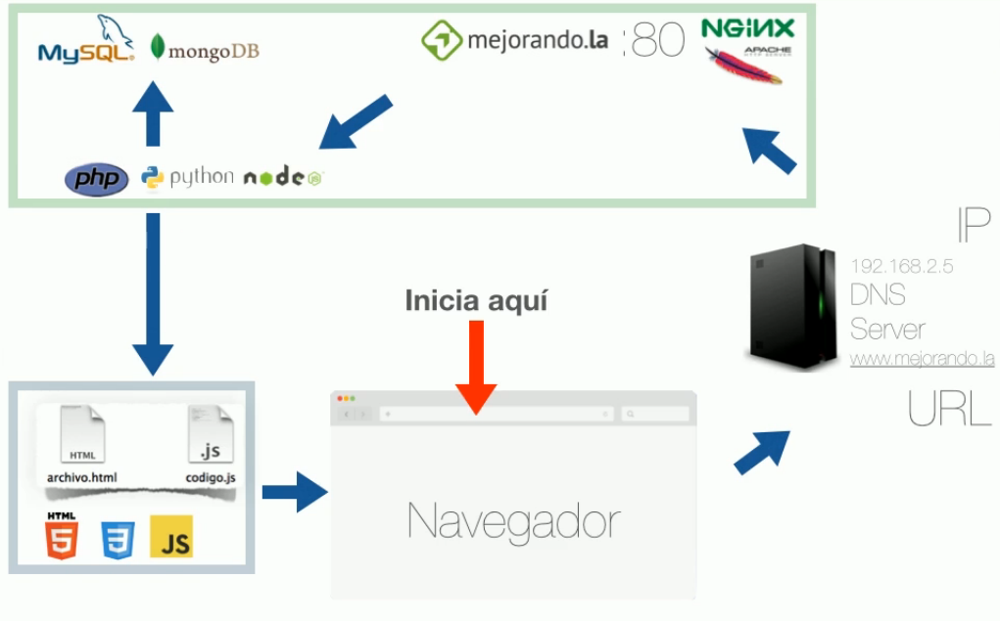

<link rel="import" href="../bower_components/polymer/polymer.html">

<dom-module id="post-programacion">

<template>
	<itc-post>
		<p class="lead">
			Donde vayamos a trabajar hay que ver si ya siguen algun estandar a seguir para eso es cuestion de preguntar y ya con ello si es que lo hay verlo y seguirlo esto servira para que tu como nuevo dentro de la organizacion comprendas como trabajan y asi tener mejor entendimiento del codigo, en caso que no haya (que seria una locura), al menos tu deberias establecer uno para el manejo de tu codigo que sobre todo pueda ser trabajado por terceros, para ello aqui comento alguno de los mas importantes o comunes que deberiamos seguir.
		</p>
		<p>
			<ul>
				<li>
					Tener un codigo bien estructurado y espaciado, siguiendo siempre el mismo orden.
				</li>
				<li>
					Siempre utiliza nombre de funciones y variables descriptivas donde estas no tengar que poner abreviaciones, pero tampoco caer en palabras larguisimas, <br> Ponga nombre a funciones y variables que sean descriptivas, evitar: entero A, Función Z, etc.
				</li>
				<li>
					Si ya pasaste por POO, hacer uso de estas herramientas que nos ofrece sobre todo herencia esto nos hara cosas mucho mas sencillas y hacer las cosas de forma modular asi que una clase sea agnostico a la otra pero sabiendo que el resultado o su trabajo hace lo que debe. (Sin excesos)
				</li>
				<li>
					Sé siempre critico sobre tu codigo, para mejorarlo día a día.
				</li>
				<li>
					Si hay metodos que pueden ser complicados, comenta lo que hace.
				</li>
				<li>
					Si es posible utilizar una metodologia como MVC, MV*, o algun otro que te hacen trabajar mas ordenado.
				</li>
			</ul>
		</p>
		<p>
			Google lo sabe todo: en el 99% de los casos, lo que estemos haciendo también lo ha hecho otra persona.<br /> Ocupen términos relevantes al problema que quieran solucionar, en esto claro revisar mas de una solucion si es posible y revisar cual es mejor, no solo aplicar la primera que hayamos encontrado.
		</p>
		<p>
			<h3>Desarrollo web</h3>
			<br />
			Aqui debemos tener claro como funciona la web por lo que dejo a muestra una pequeña tabla y una imagen que habla de ello.
			<br />
			<table class="table">
				<thead class="thead-inverse">
					<tr>
						<th>Lenguaje</th>
						<th>¿Que hace el servidor?</th>
						<th>¿Que hace el cliente?</th>
					</tr>
				</thead>
				<tbody>
					<tr>
						<td>HTML</td>
						<td>Lo genera</td>
						<td>Lo interpreta</td>
					</tr>
					<tr>
						<td>CSS</td>
						<td>Lo genera</td>
						<td>Lo interpreta</td>
					</tr>
					<tr>
						<td>Javascript</td>
						<td>Lo genera</td>
						<td>Lo ejecuta</td>
					</tr>
					<tr>
						<td>PHP</td>
						<td>Lo ejecuta</td>
						<td>Nada</td>
					</tr>
					<tr>
						<td>Base de Datos</td>
						<td>Lo ejecuta</td>
						<td>Nada</td>
					</tr>
				</tbody>
			</table>
			<br />
			
		</p>
	</itc-post>
</template>

<script>
	Polymer({
		is: "post-programacion"
	});
</script>

</dom-module>
